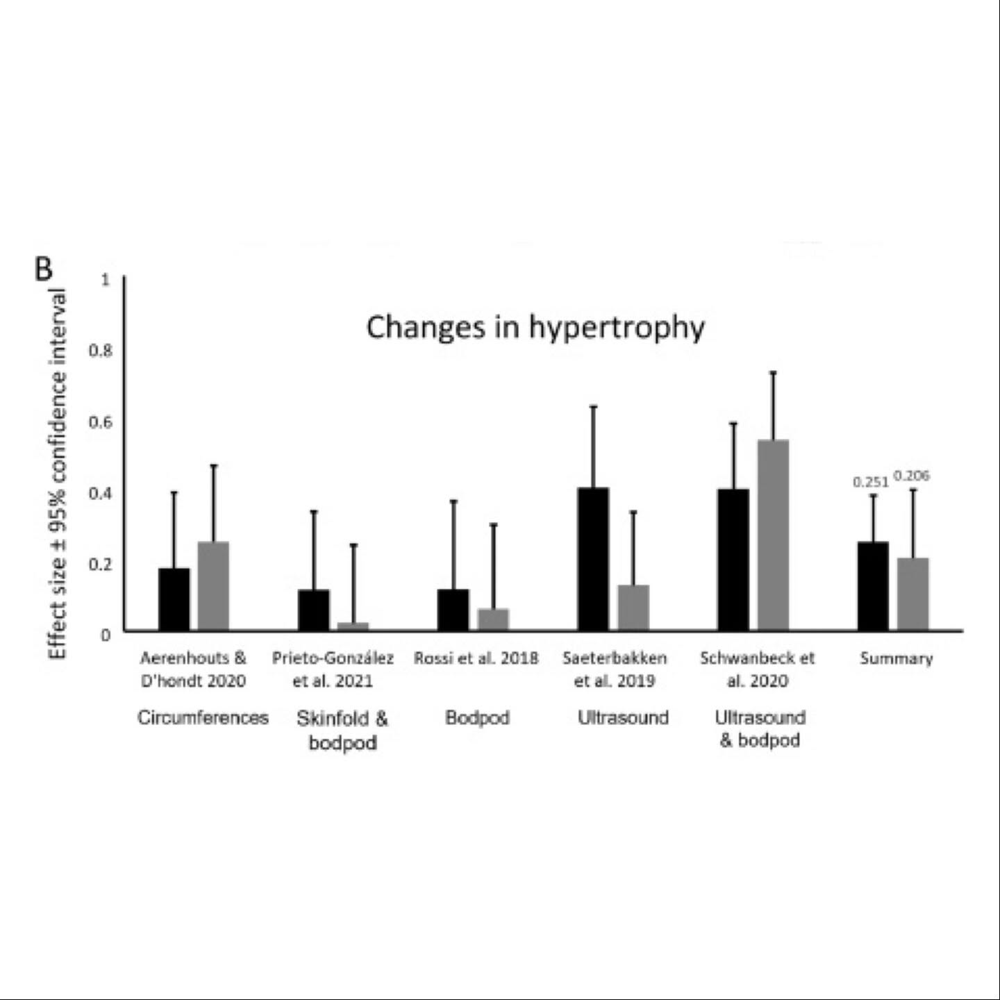

A recently published meta-analysis of randomized trials concludes that machines are just as effective at promoting muscle growth as free weights.
For older people, machines may be safer.
A systematic review and meta-analysis by Haugen and colleagues compared free weights with machines and found similar muscle growth. Only five studies qualified, and the poster notes that machines may be safer for older people.
A recently published meta-analysis of randomized trials concludes that machines are just as effective at promoting muscle growth as free weights.
For older people, machines may be safer.
There’s been a long-standing debate over whether free weights or machines are superior for building muscle. Free weights require greater stabilization and coordination, while machines provide more stability and may allow you to focus more directly on the target musculature. So does one approach actually produce greater hypertrophy?
A systematic review and meta-analysis by Haugen et al (PMID: 37582807) sought to answer this question by comparing adaptations from free-weight versus machine-based resistance training.
The hypertrophy result: Both free weights and machines promoted similar increases in muscle growth.
There are some important caveats. Only 5 studies met inclusion criteria for hypertrophy, and the methods varied considerably—ranging from ultrasound measurements of muscle thickness to BodPod, skinfold-derived estimates of body composition, and circumference measurements. This substantially limits how confidently we can conclude that the two modalities are truly equivalent across individual muscles and exercises.
Take home: If your primary goal is muscle growth, the current evidence does not support the idea that you need to prioritize either free weights or machines. Both can get the job done. For the gen pop, it’s safe to conclude that exercise selection can be based on factors such as personal preference, comfort, equipment availability, and how well a given exercise targets the muscles you’re trying to develop.
Importantly, the meta-analysis framed the comparison as free weights versus machines, but in practice, it doesn’t have to be an either/or choice. Conceivably, combining the two modalities could provide complementary benefits, as some of the advantages of free weights tend to be limitations of machines, and vice versa. Unfortunately, this possibility has yet to be directly investigated. For now, those seeking to maximize muscle development would seemingly be best-served by incorporating both free weights and machines into their training program. There appears to be potential upside to this approach with little apparent downside. 💪🏽

Louis shares a 2026 Nature Medicine study using plasma proteins from 60,542 people to estimate the biological age of over 40 cell types. Skeletal muscle aging best predicted all-cause mortality. He cautions about reverse causality but notes it offers a biological rationale for resistance training lowering mortality.

Phillips posted a new, not peer-reviewed preprint reviewing the evidence and concluding that the muscle-related benefit of protein still tops out at about 1.6 g/kg per day, and only in people doing resistance training. He argues that most trials report lean mass, about half of which is not muscle, and that women's needs are not different from men's.

A 24-week placebo-controlled trial raised protein to 1.5 g/kg/day with whey in healthy older adults. It did not improve muscle power, strength, performance or mass, though IGF-1 rose; potassium bicarbonate was also ineffective. Louis argues this means the harms of high IGF-1 without benefit.
Louis says the evidence ceiling for protein in muscle building is about 1.6 g/kg/day, with most benefit by 1.3 g/kg, and no strength benefit without resistance training.

Louis shares the 2017 Resist Diabetes randomized trial in sedentary adults aged 50-69 with prediabetes. Two days a week of machine-based, low-to-moderate-weight resistance training returned over a third of participants to normal blood sugar within 12 weeks.

William Wallace shares the Nilsson 2004 trial: in 12 healthy volunteers, whey produced a 90% higher insulin AUC and 57% lower glucose AUC than white bread, tracking plasma branched-chain amino acids. He argues repeated large insulin surges raise IGF1 and mTOR and may have long-term costs, disagreeing with a source that dismisses the concern.
![May be an image of text that says 'Haugen etal BMC Sports Sclence, Medicine Rehabilitation https:/a.i.3102134 023 00713-4 https://dol.org/1 1186/s1310 (2023) 15:103 RESEARCH ARTICLE BMC Sports BMCSportsScience, Science, Medicine and Rehabilitation Open Access Effect of free-weight VS. machine-based strength training on maximal strength, hypertrophy and jump performance- a systematic review and meta-analysis Markus Haugen FredrikT.Värvik234 Stian Larsen Arvid Thomas Bjornsen234 Roland van den Tillaar and'](../data/images/1399032248496002/s1.jpg)